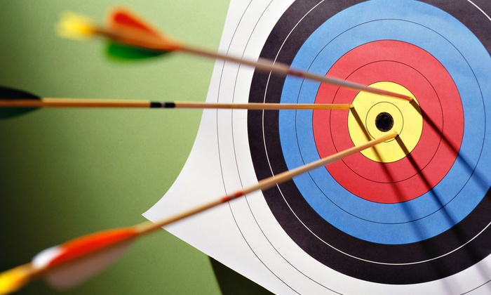

HISTORY OF ARCHERY AT OLYMPICS
|  |
ARCHERY HAD ITS DEBUT AT THE 1900 SUMMER OLYMPICS AND HAS BEEN CONTESTED IN 16 OLYMPIADS. EIGHTY-FOUR NATIONS HAVE COMPETED IN THE OLYMPIC ARCHERY EVENTS, WITH FRANCE APPEARING THE MOST OFTEN AT 31 TIMES. THE MOST NOTICEABLE TREND HAS BEEN THE EXCELLENCE OF SOUTH KOREAN ARCHERS, WHO HAVE WON 23 OUT OF 34 GOLD MEDALS IN EVENTS SINCE 1984. IT IS GOVERNED BY THE WORLD ARCHERY FEDERATION (FITA). RECURVE ARCHERY IS THE ONLY DISCIPLINE OF ARCHERY FEATURED AT THE OLYMPIC GAMES. ARCHERY IS ALSO AN EVENT AT THE SUMMER PARALYMPICS. THE SECOND OLYMPIC GAMES, PARIS 1900, SAW THE FIRST APPEARANCE OF ARCHERY. SEVEN DISCIPLINES IN VARYING DISTANCES WERE CONTESTED. THE NEXT OLYMPICS, ST. LOUIS 1904, FEATURED FIVE ARCHERY EVENTS, BUT NO ATHLETES FROM OUTSIDE THE UNITED STATES COMPETED. AT THE 1908 SUMMER OLYMPICS, THREE ARCHERY EVENTS WERE HELD. ARCHERY WAS NOT FEATURED AT THE 1912 SUMMER OLYMPICS BUT REAPPEARED IN THE 1920 SUMMER OLYMPICS. AT THE 1972 SUMMER OLYMPICS IN MUNICH CONSISTED OF A DOUBLE FITA ROUND (FROM 2014 KNOWN AS A '1440 ROUND') COMPETITION WITH TWO EVENTS: MEN'S INDIVIDUAL AND WOMEN'S INDIVIDUAL. THIS FORM OF ARCHERY COMPETITION WAS HELD UNTIL THE 1988 SUMMER OLYMPICS, WHEN TEAM COMPETITION WAS ADDED AND THE GRAND FITA ROUND FORMAT WAS USED. STARTING AT THE 1992 SUMMER OLYMPICS, THE OLYMPIC ROUND WITH HEAD-TO-HEAD MATCHES WAS ADOPTED AND HAS BEEN USED EVER SINCE.IN 1984 AT LOS ANGELES, NEROLI FAIRHALL OF NEW ZEALAND WAS THE FIRST PARAPLEGIC COMPETITOR IN THE OLYMPIC GAMES.
Qualification
QUALIFICATION SPOTS IN ARCHERY ARE ALLOTTED TO NATIONAL OLYMPIC COMMITTEES RATHER THAN TO INDIVIDUAL ATHLETES. THE MINIMUM AGE FOR AN OLYMPIC ARCHER IS 16. THERE ARE TWO WAYS AN NOC MAY EARN QUALIFICATION SPOTS: BY TEAM OR BY INDIVIDUAL. FOR EACH GENDER, AN NOC THAT EARNS A TEAM QUALIFICATION SPOT MAY SEND THREE ARCHERS TO COMPETE IN THAT TEAM EVENT; EACH ARCHER ALSO COMPETES IN THE INDIVIDUAL COMPETITION. NOCS THAT EARN INDIVIDUAL QUALIFICATION SPOTS ARE LIMITED TO A SINGLE ENTRY IN THE INDIVIDUAL EVENT. FOR EACH GENDER, THERE ARE 12 TEAM QUALIFICATION SPOTS: THE HOST NATION, THE TOP 8 TEAMS AT THE WORLD ARCHERY CHAMPIONSHIPS, AND THE TOP 3 TEAMS AT THE FINAL WORLD TEAM QUALIFICATION TOURNAMENT. IN ADDITION TO THE 36 ENTRIES AWARDED THROUGH TEAM QUALIFICATION, AN ADDITIONAL 28 INDIVIDUAL QUALIFICATION SPOTS ARE AVAILABLE FOR EACH GENDER, BRINGING THE TOTAL NUMBER OF COMPETITORS IN EACH INDIVIDUAL EVENT TO 64. OF THESE 28 SPOTS, BETWEEN 5 AND 8 ARE AWARDED AT THE WORLD ARCHERY CHAMPIONSHIPS; BECAUSE THIS EVENT TAKES PLACE BEFORE THE FINAL WORLD TEAM QUALIFICATION TOURNAMENT, INDIVIDUAL SPOTS EARNED BY NATIONS THAT LATER QUALIFY A TEAM ARE RELEASED. ADDITIONAL SPOTS (14 AS OF THE 2016 SUMMER OLYMPICS) ARE AWARDED THROUGH CONTINENTAL QUALIFYING TOURNAMENTS (THESE SPOTS ARE ALSO RELEASED IF THE NATION LATER QUALIFIES A TEAM). AT LEAST 3 SPOTS ARE AWARDED IN A FINAL WORLD INDIVIDUAL QUALIFICATION TOURNAMENT, WITH MORE AVAILABLE IF SPOTS WERE RELEASED BY NATIONS QUALIFYING TEAMS. FINALLY, 3 PLACES FOR EACH GENDER ARE RESERVED FOR TRIPARTITE COMMISSION INVITATIONS.